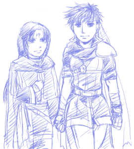

すっかりこっちにこもりっきりです。別館が充実していき…そしてこっちが本館になる日も近い…かな、とかなんとかｗ しばらくこっちばっかり更新していると思いますｗｗ
小説「花の香」の続きです。
本日はセネアイです。予定になかったけど傭兵団メンバーを登場させていこうと思って書いてみたらすらすらとネタが出てしまったので書いてしまいました。
これがまた…楽しかった！！ クセになりそうｗｗｗｗ

{kind=link}
思わずイラストまで描きたくなったほどの楽しさ。
これ、セネリオが攻っていっていいのかよくわからんが…。説明しなければアイセネに見えるけどセネアイです。アイクは何も考えてないですｗｗ ごく自然にセネリオにかまってます。…絵面的には完全に保護者ですねｗｗ
こんなことを考えててですね、今日ちょうど…家にそんなマンガがあってこれは…！ と思いました。カレカノを描いてる津田雅美の「ちょっと江戸まで」というマンガ。パラレル江戸モノということなんですが、主人公が男装美少女なんですね。クールで男前なｗ そしておえらいさんのおぼっちゃんがかわいい女の子みたいです。
男装美少女ものといえば桜蘭高校ホスト部の主人公もそうなんですが、こういうキャラが好きでたまらないｗｗ
こんな私がアイク女体化にハマらずしてどうすると！
（そんな力説することでもない）
ちょっと江戸までの主人公の女の子とおえらいさんのぼっちゃんがなんともセネアイ♀に見えた。病気です。いいなあ、男女反転モノ…。男の子に間違えられる女の子と女の子に間違えられる男の子という組み合わせ！ うおお、これでガッツリセネアイ♀書きたくなってきた。いずれ書いてしまいそうです…。
というわけで余談が長すぎましたが今回更新分について。中身読んでからどうぞ。 散々余談で語ってしまったので力尽きたのですが…
なんというか夢オチ的な感じでありがちだけどこういう展開はなんだかんだいって好きｗｗ 無頓着なアイクと悶々とするセネリオということでｗｗｗｗ
文中にも出てきてますが、セネリオはアイクを女神的に崇拝しております。性的な目で見ないようにつとめるもどぎまぎしてしまったりするラブコメ具合が楽しいです。
ララベルから逃げるのにセネリオのテントに行くアイク、というのがゲーム本編にもありますがあれもおかしかったｗ セネリオのところが一番安全だと思ってるのかな〜とか。
ちょっと休憩するのに上着脱いだり靴脱いだりしてみるアイクですが…さらしを緩めるのは…そう、ブラのホックを外すのと同等と見てくださいｗｗ
話とは関係ないですが、セネアイ♀の絡みも書いてみたくなって妄想したら…母のような愛でセネリオを包むアイクというネタが出てきた。おっぱいで包み込むといいよ。
アイクは男だったら結婚相手としてはちょっとアレな感じがするんですがｗ 女だったら結構いいお母さんになりそうとか思ってしまったり…（嫁とか通り越して母かよ！）